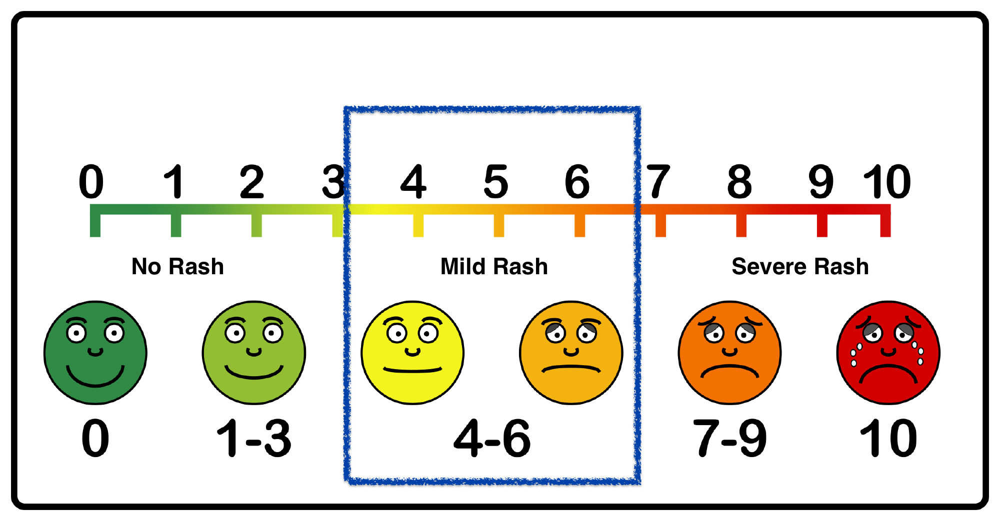

<html>
<head>
    <meta name="viewport" content="target-densitydpi=device-dpi, width = 320, user-scalable = 0">
</head>
</html>
<body>
     <span style="display: block !important; width: 320px; text-align: center; font-family: sans-serif; font-size: 12px;"><h3>Mild Rash</h3>
    The rash is often reddish and itchy with a scaly texture. Psoriasis is a common skin condition that can cause a scaly, itchy, red rash to form along the scalp, elbows, and joints.
    The current condition of the rash is MILD.
     </span>
    
</body>
